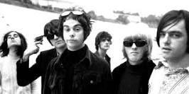
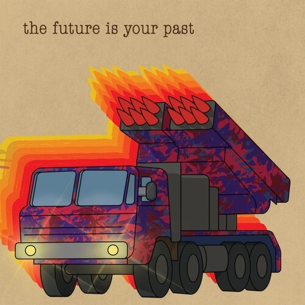

The Brian Jonestown Massacre
The Brian Jonestown Massacre (or BJM, for short) is an American musical project and band led and started by Anton Newcombe. It was formed in San Francisco in 1990. The group was the subject of the 2004 documentary film called Dig!, and have gained media notoriety for their tumultuous working relationships as well as the erratic behavior of Newcombe. The collective has released 20 albums, five compilation albums, five live albums, 14 EPs, 22 singles as well as two various-artist compilation albums to date. The bandname is a portmanteau of deceased Rolling Stones founder Brian Jones and the 1978 Jonestown Massacre.

Introduction
In my humble opinion, The Brian Jonestown Massacre is one of the greatest bands of all time, and they are easily one of my favorite bands. Their discography spans over three decades, and their versatility is unmatched by most artists. Their music spans multiple genres such as psychedelic rock, garage rock, shoegaze, neo-psychedelia, folk rock, blues rock, and country rock. With such a vast discography, their discography can be intimidating to a new listener. I will be breaking down some of my favorite albums below!
Best releases by The BJM
- Spacegirl and Other Favorites
- Thank God for Mental Illness
- Give It Back!
- Take It From the Man!
- The Future Is Your Past
This is the second studio album by The BJM. It features loud, droning guitars and ethereal vocals with lots of imperfections and feedback, which give it its charm. The track "Crushed" kicks off with lots of amp feedback followed by a heavily distorted, harmonic guitar riff that builds up into a beautiful wall of sound. "When I Was Yesterday" evokes a dreamy, psychedelic atmosphere with a catchy, bluesy guitar riff that feels like it belongs in an independent crime flick. Other favorite tracks of mine are "Deep in the Devils Eye and You", "That Girl Suicide", and "Hide and Seek". Fans of bands such as My Bloody Valentine and The Velvet Underground will surely enjoy this album for it's shoegaze sound.
This is the fifth studio album by The BJM. This album is mostly acoustic and features lofi folk songs with a psychedelic touch. It is a dramatic departure from their earlier records. If you're a Bob Dylan fan, you'll probably love this album. "It Girl" is one of my favorite songs by this band and is probably the strongest track on the album. With it's psychedelic lead guitar and catchy hook, I could easily see it being used in a Quentin Tarantino film. "The Ballad of Jim Jones" features cryptic lyrics and harmonica, sounding like a street performance of a popular Dylan song. Other favorites of mine from this album are "Spanish Bee", "Stars", "Cause I Love Her" and "Down".
This is the sixth studio album by The BJM. This album marks a return to their earlier sound after "Thank God for Mental Illness". This record has the garage, psychedelic, and shoegazy sound that everyone loves The BJM for. "Malela" notably features a sitar and a clapping style of drum beat. "Satellite" and "Servo" evoke a classic 60's garage rock sound, while "Sue" is an eight minute track of heavy, slogging electric guitars. "Not if You Were the Last Dandy on Earth" is a sardonic parody song aimed at then-rival The Dandy Warhols. Other favorite tracks of mine are "The Devil May Care (Mom and Dad Don't)" and "Whoever You Are".
After recording their first two shoegaze-influenced albums, The BJM sought to record an album heavily influenced by garage and psychedelic rock bands from the 1960's, and this wonderful record was born. Any fan of The Rolling Stones will surely enjoy this release. "Who?" features one of the best guitar solos out of any BJM song, while "Caress" sounds like it could have been recorded by Jagger and Richards themselves. "(David Bowie I Love You) Since I Was Six" is a beautiful, melancholy tribute to the late David Bowie. Other favorite tracks of mine are "Vacuum Boots", "Straight Up and Down", "Mary, Please", and "Cabin Fever", the last of which was the first song by The BJM that I learned how to play on guitar.
While the previous albums I listed were all recorded in the 1990's, make no mistake. The BJM is still dropping albums that are on par with any of their releases from three decades ago. The Future Is Your Past is The BJM's sound personified, showcasing the bands ability to take influence from some of the best music of the decades before the bands formation and crafting it into their own beautiful, dreamy, psychedelic sound. "Nothing Can Stop The Sound" features organ reminisicent of Ray Manzarek from The Doors. "Fudge" makes me feel like I am walking through an old growth forest at dawn, and a dimly lit alternative Amsterdam nightclub at the same time. Other great tracks include "Cross Eyed Gods", "All the Feels", and all the others.
The Brian Jonestown Massacre Tour 2023
April 2023
- SUN 16th April 23 CHILE Santiago - Basel
- TUE 18th April 23 ARGENTINA Buenos Aires - Complejo C Art Media
- THU 20th April 23 BRAZIL São Paulo - Cine Joia
- FRI 21st April 23 BRAZIL Brasilia - Picnik Festival (Praça Portugal) N/A - Free Entry
July 2023
- FRI 7th July 23 FRANCE Six Fours - Pointu Festival
- SAT 8th July 23 ITALY Soliera (MO-Emilia Romagna) - Artivive
- SUN 9th July 23 ITALY Chiusi (SI - Tuscany) - Lars Rock Fest N/A - Free Entry
- MON 10th July 23 ITALY Turin (Piemonte) - SPAZIO 211 Open Air
August 2023
- FRI 4th Aug 23 FINLAND Kuusamo - Bal des Incohérents Festival
- THU 17th Aug 23 PORTUGAL Paredes De Coura - Paredes De Coura Festival
September 2023
- SAT 2nd Sept 23 U.K Manchester - Psych Fest (Albert Hall)